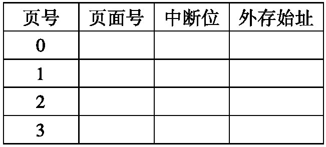

Loading...
5.1.1 虚拟地址的变换
5.1.1 虚拟地址的变换
地址变换是操作系统要解决的问题

5.1.5 内存信息的共享与保护
5.1.5 内存信息的共享与保护

固定分区法
固定分区法
定义
- 固定分区法就是把内存区固定地址划分成若干个大小不等的区域
- 分区划分一般由系统操作员或操作系统完成
- 分区一旦划分，整个执行过程中每个分区的长度和内存的总分区个数将保持不变
- 数据结构：分区表（分区号，分区大小，起始地址和状态位）

动态分区的数据结构
动态分区的数据结构
- 分区表
- 可用分区表或可用分区链
- 内存资源请求表

覆盖技术
覆盖技术
基本原理
- 把程序划分若干个功能上相对独立的程序段，按照程序的逻辑结构让那些不会同时执行的程序段共享同一块内存区。当有关程序段先头程序段已经执行结束后，再把后续程序段调入内存覆盖前面的程序段。
- 程序员完成
一个例子

静态页面管理
静态页面管理
页表

静态页面管理
静态页面管理
请求表
静态页面管理
静态页面管理
存储页面表
静态页面管理
静态页面管理

动态页式管理
动态页式管理
如何发现缺页？
- 通过扩充页表解决（增加中断位，外存始址）

如何处理缺页？
- 什么方式调入？
- 如何淘汰页面

请求页式管理中的置换算法
请求页式管理中的置换算法

段式管理的地址变换
段式管理的地址变换
段表

动态地址变换
动态地址变换

段页式管理的实现原理
段页式管理的实现原理
虚地址的组成

局部性原理和抖动原理
局部性原理和抖动原理

本章小结
本章小结